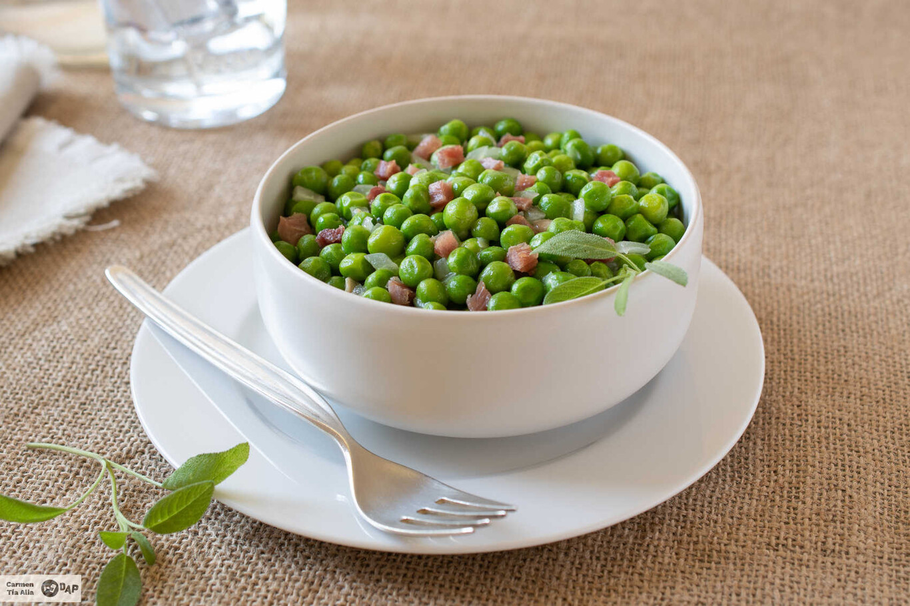

Segundo plato: Guisantes con jamón
Índice
Guisantes
Cebolla cortada en brunoise fino
Jamón serrano en tacos
Harina de trigo
Cortamos la cebolla y la picamos en brunoise. Pnemos la cebolla a fuego lento en una sertén con dos cucharadas de aceite de oliva.
Ponemos los guisantes en una olla con a gua unos 12 minutos de cocción.
Cuando la cebolla está transparente agregamos el jamón serrano muy picado y una puntita de harina
Se liga un poco esa salsa de cebolla, jamón y harina y se agregan los guisantes bien escurridos, mezclamos bien
Servimos los guisantes en un plato y están listos para ser devorados
